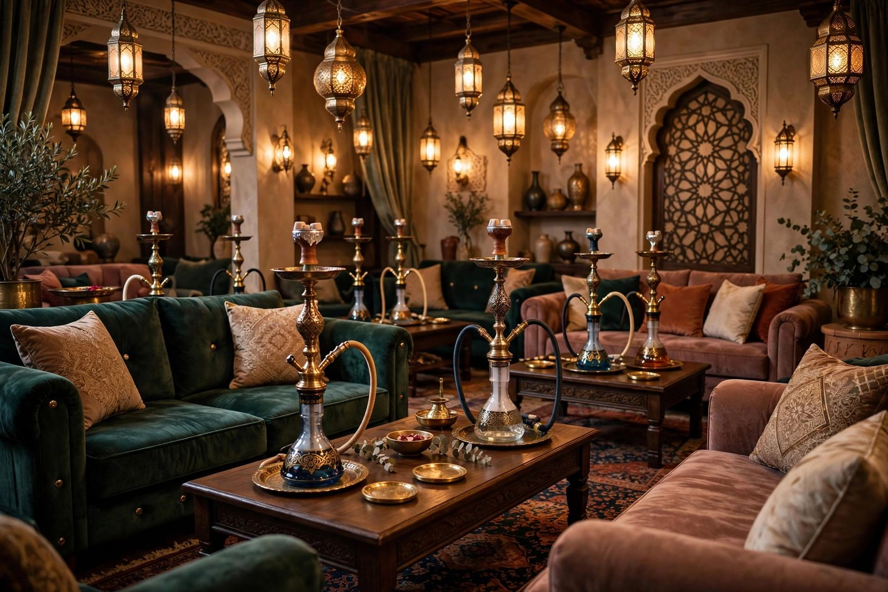

Faiaz Shisha
Multi-page website for a shisha lounge with flavour menu and booking

Overview
Faiaz Shisha is a multi-page website for a shisha lounge that leads with atmosphere. The design uses a deep dark background palette with gold accent colours, layered CSS gradients, and scroll-triggered fade-in animations to create the immersive, ambient feel the business wanted online. The site spans five pages: a hero home page establishing the mood, a flavour menu categorised into fruit, mint, and mixed blends, a photo gallery with a masonry-inspired CSS layout, a booking information page with a validated reservation form, and a contact/location page. JavaScript-powered tabs on the menu page let customers browse by category without leaving the page. CSS IntersectionObserver-triggered animations reveal content as users scroll, reinforcing the atmospheric design direction throughout the experience.
Architecture
Tech Stack
- HTML5, Semantic page structure;
aria-selectedattributes on tab buttons for accessibility;aria-liveon the booking confirmation message - CSS3, Custom properties for the gold/dark colour scheme;
@keyframesfor balloon float, fade-in cascade, and gradient pulse animations; CSS columns for masonry gallery layout - CSS Animations, Scroll-triggered via
IntersectionObserver; elements startopacity: 0; transform: translateY(20px)and transition to visible on entry - Vanilla JavaScript, Tab-based menu filtering,
IntersectionObserveranimation trigger, booking form validation (date range, time slot, party size limits), mobile menu toggle - Responsive Design, Mobile-first base with breakpoints at 480 px, 768 px, and 1024 px; dark theme maintained consistently at all sizes
Build Process
Established the visual language with deep charcoal backgrounds (#0d0d0d, #1a1a1a), gold accent colours (#c9a84c, #e8c96e), and off-white body text. All values were encoded as CSS custom properties so the entire theme can be adjusted from one declaration block.
:root {
--color-bg: #0d0d0d;
--color-surface: #1a1a1a;
--color-gold: #c9a84c;
--color-gold-lt: #e8c96e;
--color-text: #e8e0d5;
--color-muted: #888;
--font-display: 'Playfair Display', serif;
--font-body: 'Inter', sans-serif;
}The hero uses a background image overlaid with a multi-stop linear-gradient from near-opaque dark at the bottom to semi-transparent at the top, creating depth without a separate overlay element. A subtle CSS @keyframes animation pulses the gradient opacity to give the hero a breathing, atmospheric feel on desktop.
.hero {
background-image:
linear-gradient(to top, rgba(13,13,13,0.95) 0%, rgba(13,13,13,0.4) 60%, transparent 100%),
url('images/hero-bg.jpg');
background-size: cover;
background-position: center;
min-height: 100svh;
display: flex;
align-items: flex-end;
}Each flavour card has a data-category attribute (fruit, mint, mixed). Tab buttons use aria-selected for accessibility. The JavaScript filter works identically to the product filter pattern, reading data-category on each card and setting visibility based on the active tab, ensuring the DOM is the single source of truth.
The gallery uses the CSS columns property to achieve a masonry-style layout without JavaScript. Images flow into column tracks naturally, with a break-inside: avoid on each figure to prevent images splitting across column boundaries.
.gallery-masonry {
columns: 1;
gap: 1rem;
}
@media (min-width: 480px) { .gallery-masonry { columns: 2; } }
@media (min-width: 768px) { .gallery-masonry { columns: 3; } }
.gallery-masonry figure {
break-inside: avoid;
margin-bottom: 1rem;
}The booking form validates: date (must be future date using Date.now() comparison), time slot (valid hours 17:00 to 01:00), and party size (1 to 20). Invalid states display inline error messages adjacent to the affected field. On valid submission a confirmation message receives focus for screen-reader accessibility.
function validateBooking(form) {
const date = new Date(form.date.value);
const hour = parseInt(form.time.value.split(':')[0]);
const size = parseInt(form.partySize.value);
const validHours = (hour >= 17) || (hour < 2);
if (date <= new Date()) return showError(form.date, 'Date must be in the future');
if (!validHours) return showError(form.time, 'Bookings available 17:00 to 01:00');
if (size < 1 || size > 20) return showError(form.partySize, 'Party size: 1 to 20');
return true;
}Elements that should animate on scroll are given a .reveal class. A single IntersectionObserver watches all .reveal elements and adds .is-visible when they enter the viewport. CSS handles the transition entirely, .reveal starts at opacity: 0; transform: translateY(20px) and .reveal.is-visible transitions to opacity: 1; transform: none. Cascade delays are set with inline --delay custom properties.
// JS - set up observer
const observer = new IntersectionObserver((entries) => {
entries.forEach(e => { if (e.isIntersecting) { e.target.classList.add('is-visible'); observer.unobserve(e.target); } });
}, { threshold: 0.15 });
document.querySelectorAll('.reveal').forEach(el => observer.observe(el));
/* CSS */
.reveal { opacity: 0; transform: translateY(20px); transition: opacity 0.5s ease var(--delay, 0s), transform 0.5s ease var(--delay, 0s); }
.reveal.is-visible { opacity: 1; transform: none; }Visitor Experience Flow
Challenges & Solutions
IntersectionObserver Browser Support. Older browsers, primarily Internet Explorer 11 and early Edge, do not support IntersectionObserver. A feature-detection check (if ('IntersectionObserver' in window)) was used: if the API is available, the observer is set up; if not, all .reveal elements have .is-visible added immediately so they render fully visible without animation. This polyfill-free graceful degradation covers the vast majority of real-world users without adding any external dependency.
Booking Form Time Slot Restrictions. The HTML time input alone cannot restrict allowed hours to a business-hours window. Pure HTML min/max attributes on a time input only handle the simple case of a contiguous window and cannot handle the 17:00 to 01:00 window that wraps midnight. Custom JavaScript validation was required, parsing the hour from the input value and checking it against the allowed range with a logical OR for before-midnight and after-midnight hours.
What I Learned
- Layered CSS gradients over background images are more maintainable than a separate overlay element and give finer control over the blend
- The CSS
columnsproperty is a quick, JavaScript-free way to achieve masonry-style gallery layouts;break-inside: avoidis essential to prevent image splitting IntersectionObserveris the performant, standards-based approach for scroll-triggered animations, polling withscrollevent listeners causes layout thrashing- Using a single
--delayCSS custom property on each element for staggered cascade animations avoids duplicating transition rules and keeps the cascade flexible - Time-range validation that wraps midnight cannot be handled with HTML input attributes alone, custom JavaScript logic is necessary
- Dark-theme design systems benefit significantly from CSS custom properties; a palette change requires editing only the
:rootblock
How I Built It
Phase 1: Structure and dark-theme design system. I started with the multi-page skeleton and a dark theme built on CSS custom properties in :root, so the entire palette can be adjusted in one place. Layered CSS gradients sit over background imagery for depth without extra overlay elements.
Phase 2: Flavour menu and gallery. The flavour menu and gallery pages came next. The gallery uses the CSS columns property for a masonry-style layout with break-inside: avoid so images never split across columns, entirely without JavaScript.
Phase 3: Booking form with business-hours logic. The booking form validates against the lounge's 17:00 to 01:00 hours. Because that window wraps midnight, plain HTML min/max attributes cannot express it, so custom JavaScript parses the hour and checks the allowed range with a logical OR covering both sides of midnight.
Phase 4: Scroll-triggered reveals. Message sections cascade into view through IntersectionObserver, with a per-element --delay CSS custom property driving the stagger. A feature-detection guard falls back to fully visible content on older browsers.
Phase 5: Responsive pass. Media queries reflow the layout for phones and tablets, and the design was checked at common breakpoints before shipping.
What You Need
| Category | Item | Notes |
|---|---|---|
| Tool | A modern web browser | Everything is static HTML, CSS, and vanilla JavaScript |
| Software | Code editor | Multi-page static site; no build step |
| Software | Image editor | For resizing and optimising menu and gallery photos |
| Skill | HTML5 and semantic markup | Multi-page structure with consistent navigation |
| Skill | CSS custom properties and keyframes | Dark theme tokens, gradients, scroll reveal transitions |
| Skill | JavaScript form validation | Custom time-window logic for the booking hours |
| Skill | IntersectionObserver | Performant scroll-triggered animations with graceful fallback |
| Account | Static host (e.g. GitHub Pages) | Where the live site is published |
Challenges and Lessons Learned
Time windows that wrap midnight. HTML input attributes assume contiguous ranges, but 17:00 to 01:00 crosses the day boundary. Writing custom validation logic was unavoidable, and it taught me to read form constraints as UX promises: whatever the business hours are, the form must enforce exactly those, not an approximation.
Graceful degradation for IntersectionObserver. Rather than shipping a polyfill for IE11-era browsers, the feature-detection fallback keeps content visible everywhere. The lesson: animation is enhancement, and enhancement should fail open.
Dark-theme maintainability. Centralising the palette in :root custom properties meant late-stage colour tweaks were one-line edits instead of search-and-replace across the stylesheet. Design tokens earn their keep on the first redesign, not the first build.
What Is Next
- Table reservation system with real availability, replacing the enquiry-style booking form
- Menu management via a small CMS so the lounge staff can update flavours without editing code
- Multilingual support for the menu pages
- Event and promotions section with date-based publishing
- Performance budget: responsive image sizes and lazy loading for the gallery